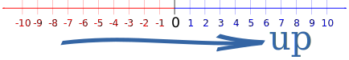
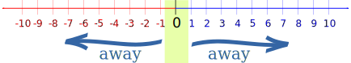

Rounding Methods
There are many ways to round numbers ...
Firstly, what is "Rounding" ?
Rounding means making a number simpler but keeping its value close to what it was. The result is less accurate, but easier to use.
Example: 7.3 rounds to 7
Because 7.3 is closer to 7 than to 8
(Note: we round to whole numbers in these examples, but we can round to tens, tenths, etc)
But what about 7.5? Is it closer to 7 or closer to 8?

7.5 is halfway in between, so what should we do?
Half Round Up (the common method of rounding)
The common method of rounding is to make 0.5 go up, so 7.5 rounds up to 8
7.5 usually rounds up to 8
But this is not a law or anything, it is just what people normally agree to do, and we get this:
- 7.6 rounds up to 8
- 7.5 rounds up to 8
- 7.4 rounds down to 7
Learn more about this method at Rounding Numbers.
Half Round Down
But 5 can go down if we want. In that case 7.5 rounds down to 7, and we get this:
- 7.6 rounds up to 8
- 7.5 rounds down to 7
- 7.4 rounds down to 7
But we should always let people know we are using "Half Round Down".
Why make 0.5 go down? Maybe there are lots of 0.5's in our numbers and we want to see what rounding down does to our results.
Have a Play ... try different rounding methods on the Rounding Tool.
Negative Numbers
But what about -7.5 ?
- Does it round to -8 (and is that going "up" or "down" ?),
- Or does it round to -7 ?
Help! I am confused!
In fact the whole world is confused about rounding negative numbers ... some computer programs round -7.5 to -8, others to -7
But we can agree here that "up" means heading in a positive direction, like on this number line:

Half Round Up (including negative numbers)
So we get this:
- 7.6 rounds up to 8
- 7.5 rounds up to 8
- 7.4 rounds down to 7
- -7.4 rounds up to -7
- -7.5 rounds up to -7
- -7.6 rounds down to -8
Half Round Down (including negative numbers)
When we round 0.5 down we get this:
- 7.6 rounds up to 8
- 7.5 rounds down to 7
- 7.4 rounds down to 7
- -7.4 rounds up to -7
- -7.5 rounds down to -8
- -7.6 rounds down to -8
"Symmetric" Rounding
But maybe you think "7.5 rounds up to 8, so -7.5 should go to -8", which is nice and symmetrical.
Well you are in luck because that is rounding towards or away from zero:

Round Half Away From 0
For this method, 0.5 rounds the number so it is further away from zero, like this:
- 7.6 rounds away to 8
- 7.5 rounds away to 8
- 7.4 rounds to 7
- -7.4 rounds to -7
- -7.5 rounds away to -8
- -7.6 rounds away to -8
Round Half Towards 0
Or we can have 0.5 round the number closer to zero, like this:
- 7.6 rounds away to 8
- 7.5 rounds to 7
- 7.4 rounds to 7
- -7.4 rounds to -7
- -7.5 rounds to -7
- -7.6 rounds away to -8
But Being Consistent Can Be Bad
Choosing any of those methods can be bad, though!
Imagine you are adding up a long list of numbers. You decide to round each number to make it quicker. If there are a lot of 0.5s they all get rounded up and your answer will have a bias.
Example: Add these numbers before and after rounding: 5.5, 7.5, 6.5, 9.5
Before rounding: 5.5 + 7.5 + 6.5 + 9.5 = 29
After rounding: 6 + 8 + 7 + 10 = 31
The calculation was a lot easier, but the answer drifted up a lot!
How can we stop the rounding being all one direction?
We can decide to round towards even (or odd) numbers, or we can just choose randomly.
Round to Even (Banker's Rounding)
We round 0.5 to the nearest even digit
Example:
7.5 rounds up to 8 (because 8 is an even number)
but 6.5 rounds down to 6 (because 6 is an even number)
Other numbers (not ending in 0.5) round to nearest as usual, so:
- 7.6 rounds up to 8
- 7.5 rounds up to 8 (because 8 is an even number)
- 7.4 rounds down to 7
- 6.6 rounds up to 7
- 6.5 rounds down to 6 (because 6 is an even number)
- 6.4 rounds down to 6
- etc
Round to Odd
Just like "Round To Even", but 0.5 heads towards odd numbers
Example:
7.5 rounds down to 7 (because 7 is an odd number)
but 6.5 rounds up to 7 (because 7 is an odd number)
Round Randomly
We could also choose to round 0.5 up or down randomly, but how? By tossing a coin? Or a computer function?
With a large list of numbers this can give good results, but also gives a different answer each time (unless we use a fixed list of random choices).
Floor and Ceiling
There are two other methods that don't even consider 0.5. They are called Floor and Ceiling.
Floor gives us the nearest integer down (and ceiling goes up).
Example: What is the floor and ceiling of 2.31?

The Floor of 2.31 is 2
The Ceiling of 2.31 is 3
Floor
Using "floor", all digits go down, no matter what the dropped digit is:
Example: 7.8 goes down to 7
so does 7.2, 7.5, 7.9, etc.
And 7 goes to 7, too.
Ceiling
And "ceiling" goes up:
Example: 7.1 goes up to 8
so does 7.2, 7.5, 7.8, etc.
But 7 stays at 7.
Summary
| Number | Half Up | Half Down | Half Away 0 | Half To 0 | Half Even | Half Odd | Floor | Ceiling |
|---|---|---|---|---|---|---|---|---|
| 8 | 8 | 8 | 8 | 8 | 8 | 8 | 8 | 8 |
| 7.6 | 8 | 8 | 8 | 8 | 8 | 8 | 7 | 8 |
| 7.5 | 8 | 7 | 8 | 7 | 8 | 7 | 7 | 8 |
| 7.4 | 7 | 7 | 7 | 7 | 7 | 7 | 7 | 8 |
| 7 | 7 | 7 | 7 | 7 | 7 | 7 | 7 | 7 |
| -7 | -7 | -7 | -7 | -7 | -7 | -7 | -7 | -7 |
| -7.4 | -7 | -7 | -7 | -7 | -7 | -7 | -8 | -7 |
| -7.5 | -7 | -8 | -8 | -7 | -8 | -7 | -8 | -7 |
| -7.6 | -8 | -8 | -8 | -8 | -8 | -8 | -8 | -7 |
| -8 | -8 | -8 | -8 | -8 | -8 | -8 | -8 | -8 |
Rounding to Tens, Tenths, Whatever ...
In our examples we rounded to whole numbers, but you can round to tens, or tenths, etc:
Example: "Half Round Up" to tens (nearest 10):
25 rounds up to 30
24.97 rounds down to 20
Example: "Half Round Up" to hundredths (nearest 1/100):
0.5168 rounds up to 0.52
1.41119 rounds down to 1.41